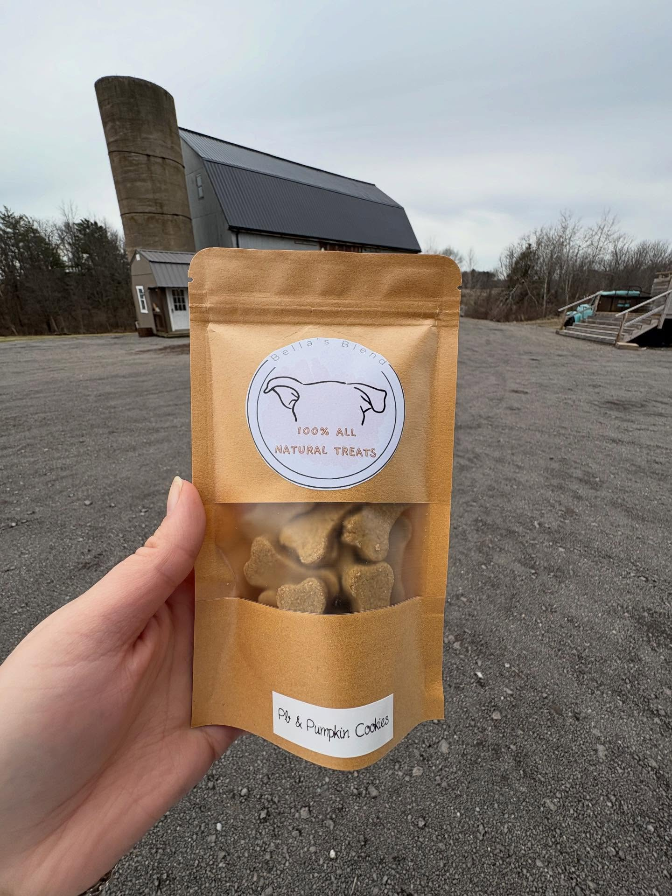
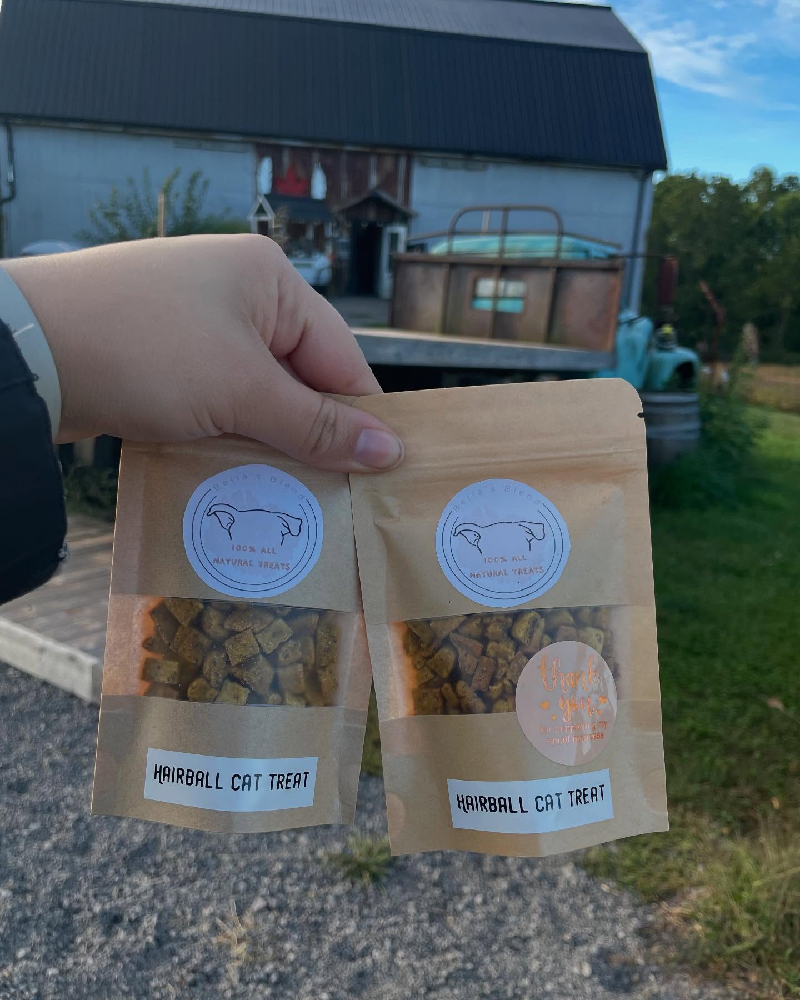
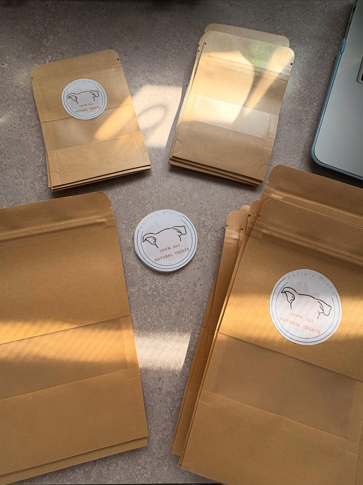
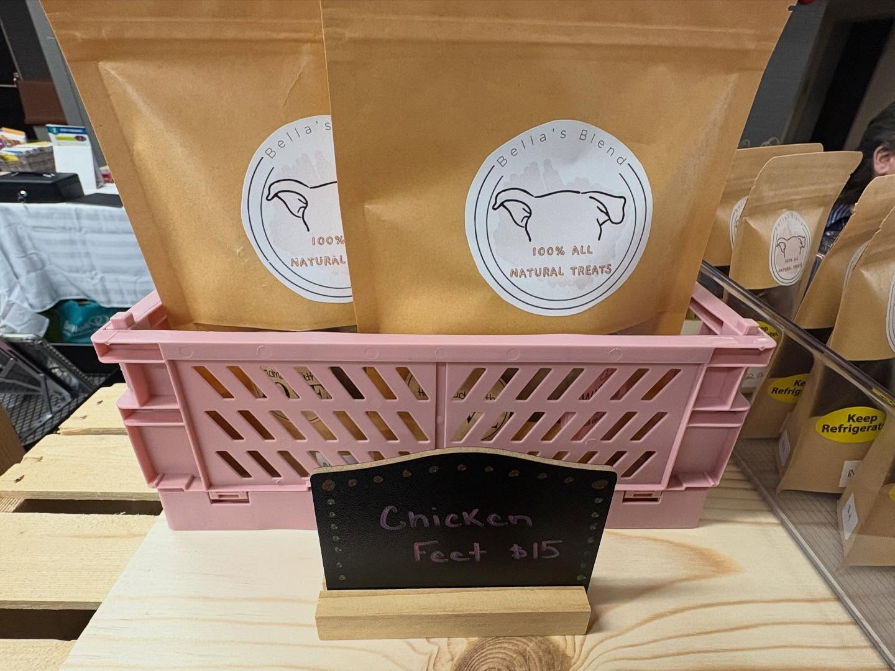

From Our Kitchen to Your Porch
A peek at how each batch comes together, gets packaged, and makes it out to market.





We make three kinds of treats, each suited to different dogs and different moments - from crunchy training rewards to gentle chews for sensitive stomachs.
Loading categories…
Every treat starts with whole, recognizable ingredients: whole wheat or oat flour, real meat and fish, fruits and vegetables, and eggs. Nothing is deep-fried, and nothing is loaded with sugar or salt.
No artificial colors or flavors, no BHA/BHT or other chemical preservatives, no corn syrup, and no xylitol (which is toxic to dogs). If your dog has a specific allergy, check the ingredient list on each product page - we list every ingredient in every treat.
Browse the ShopA peek at how each batch comes together, gets packaged, and makes it out to market.



